P00 — Mobile App Preview Shell
Khung app có viewport và vùng cuộn riêng. Overlay được mount bên trong app; backdrop không phủ desktop.
Desktop: trước → sau
BEFORE — native dialog top-layer phủ browser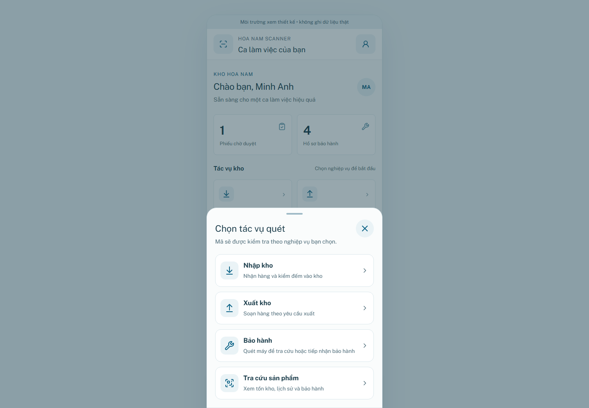
AFTER — overlay trong khung app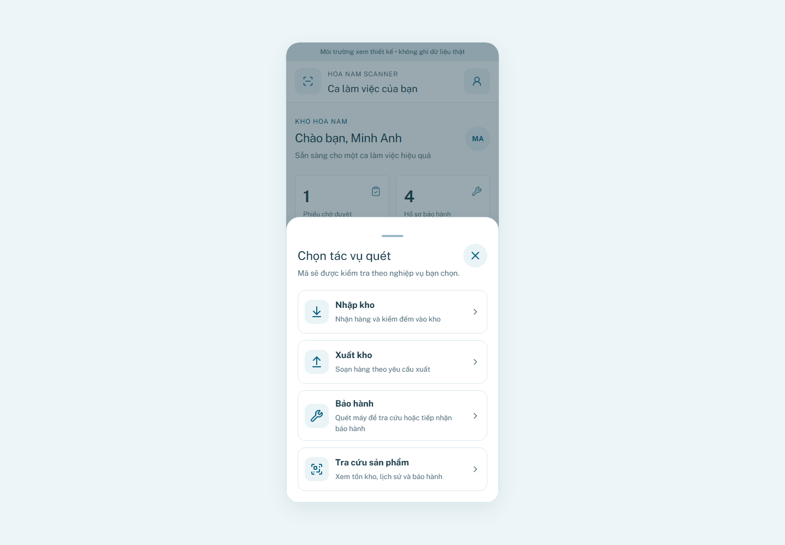
Phone 360px
Trước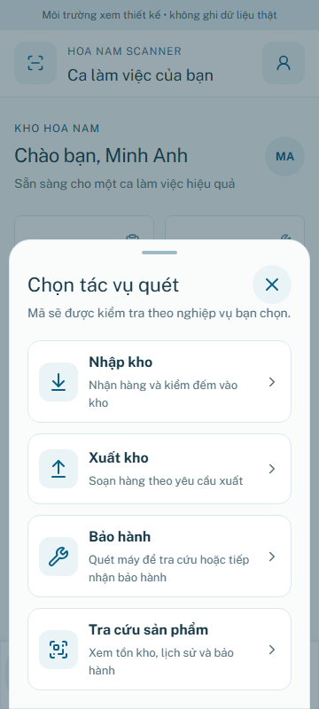
Sau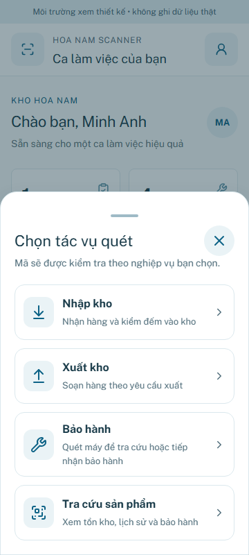
Phone 390px
Trước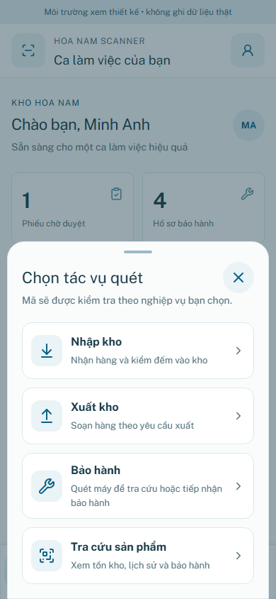
Sau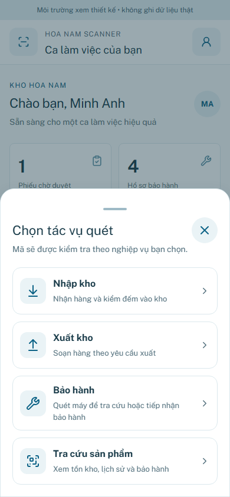
Phone 430px
Trước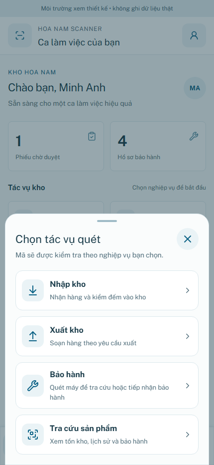
Sau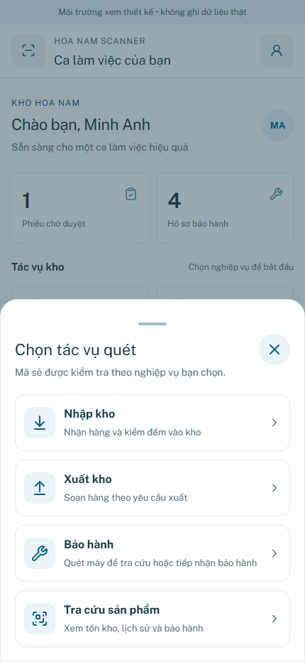
Các overlay khác — 390px
Bỏ phiếu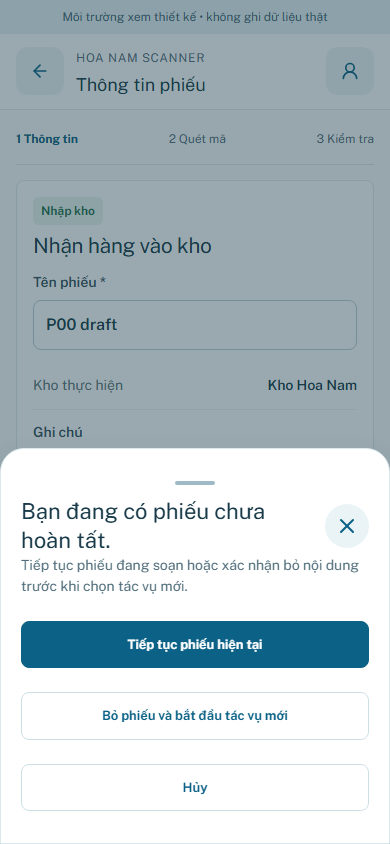
Trạng thái kho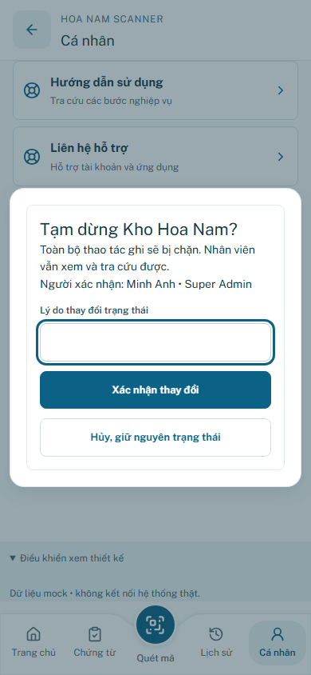
Nhập mã thủ công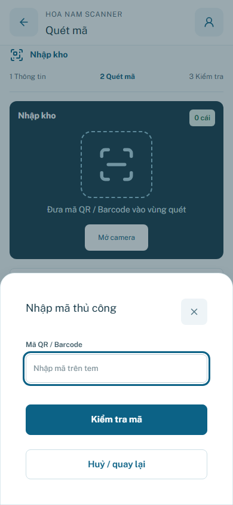
NFC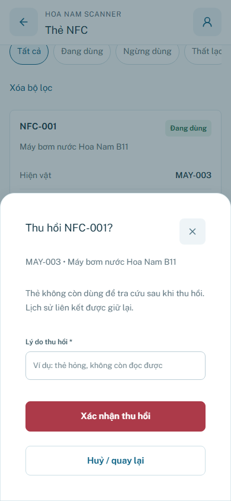
Bảo hành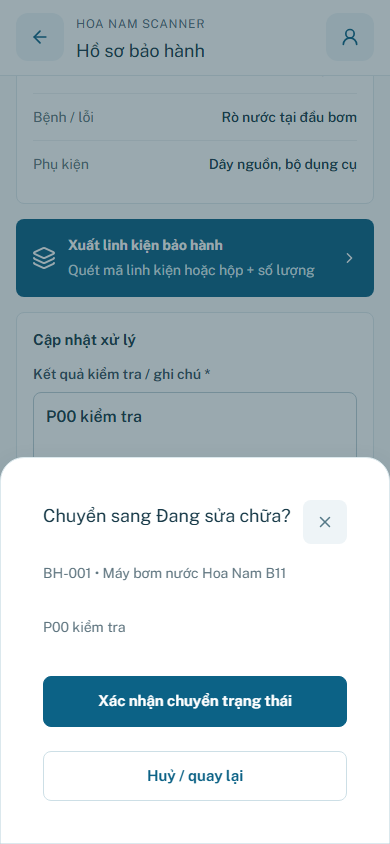
Đăng xuất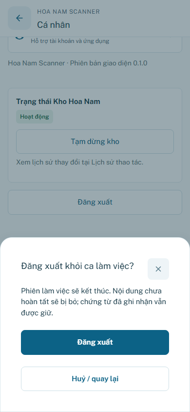
Ảnh đại diện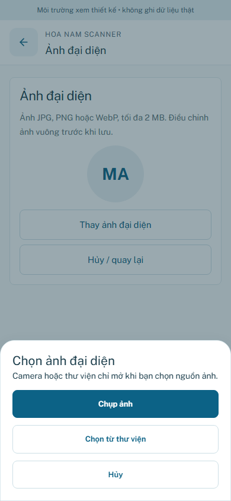
Confirm mật khẩu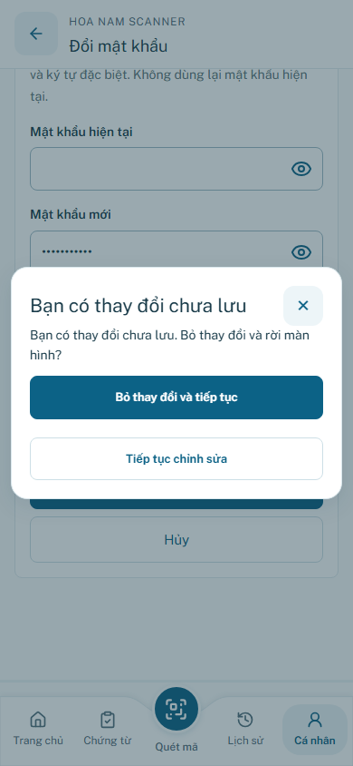
Height420 + safe-area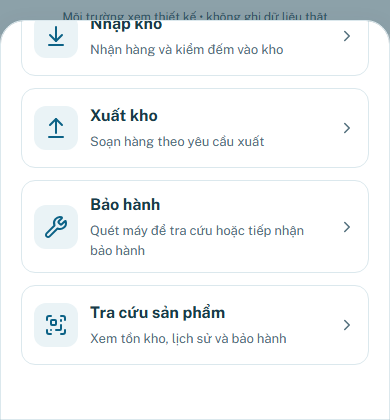
Containment/focus log · Axe/confirm log · Kích thước viewport desktop
Mobile emulation; không phải test VoiceOver/TalkBack/keyboard OS vật lý. Không thay business rules.